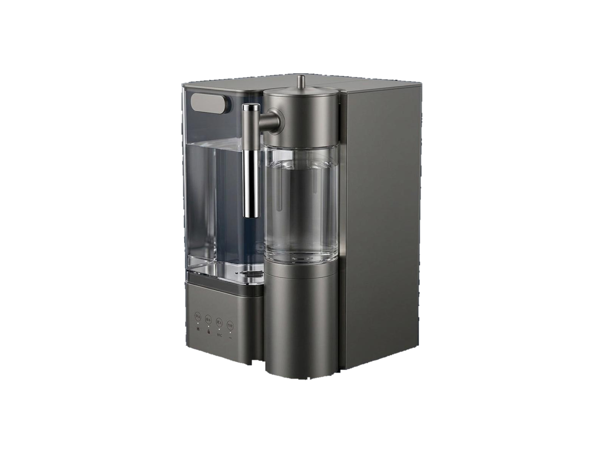

Da banco
Da bancoRP-C07
Purificatore RO con caraffa riscaldante
SKU: RP-C07
MOQ: da confermare su richiesta
Pagina iniziale/Prodotti/Sistemi da banco/ RP-C10

Sistemi da banco
RO da banco con raffreddamento a compressore (M2301RNC)
RP-C10 — RO da banco con raffreddamento a compressore. Specifica chiave: Capacità RO 50/75 GPD. Le specifiche sono confermate per modello e ordine.
Richiedi un preventivo per RP-C10
Tensione / frequenza configurabili per il paese di destinazione. Altre configurazioni sono confermate per ordine.
RP-C10 è un purificatore RO da banco con raffreddamento a compressore, offerto in due opzioni: il modello principale con raffreddamento a compressore (M2301RNC) e una variante compatta da banco (AM916R). Il modello principale riscalda 20 L/h a ≥90 °C e raffredda 2,5–3 L/h a ≤10 °C a 50/75 GPD; la variante compatta funziona a 50/75/100 GPD con un serbatoio dell'acqua grezza da 9,5 L e un serbatoio dell'acqua pura da 1,5 L. Entrambe hanno un volume totale purificato di 2000 L.
Qual è la quantità minima d'ordine?
Il primo ordine è di 200 unità per modello, e i riordini sono di 500 unità.
Posso ordinare un campione prima di un ordine in volume?
Sì. I campioni sono pronti in 15 giorni e il costo del campione viene rimborsato con il primo ordine in volume. Gli ordini in volume richiedono 40 giorni dopo l'approvazione del campione e vengono spediti FOB Shenzhen.
Quale variante dovrei scegliere?
Scelga il modello principale per acqua calda e fredda con raffreddamento a compressore. Scelga la variante compatta per un corpo più piccolo da 312 × 250 × 392 mm; la capacità di riscaldamento e raffreddamento è confermata per ordine.
Due opzioni da banco — quotare come RP-C10 e specificare la variante (raffreddamento a compressore o banco compatto).
Passi il cursore sull'immagine di una variante per vederne le specifiche. Sui touchscreen, tocchi un'immagine.

Specifiche complete di ciascuna variante, fianco a fianco. La tabella delle specifiche più avanti mostra i valori di RP-C10.
| Specifica | RP-C10-1 — raffreddamento a compressore (M2301RNC) | RP-C10-2 — variante compatta da banco (AM916R) |
|---|---|---|
| Capacità RO | 50/75 GPD | 50/75/100 GPD |
| Produzione RO | Confermato per ordine | ≥0.13 / ≥0.19 / ≥0.26 L/min (50 / 75 / 100 GPD) |
| Capacità di riscaldamento / raffreddamento | 20 L/h a ≥90 °C / 2.5–3 L/h a ≤10 °C | Confermato per ordine |
| Potenza nominale | 2228 W | 40 W |
| Dimensioni (L×P×A) | 470×210×443mm | 312 × 250 × 392 mm |
| Serbatoi dell'acqua | Confermato per ordine | Serbatoio acqua grezza 9.5 L; serbatoio acqua pura 1.5 L |
| Filtrazione | PP + CTO + RO + C | Composito 5 in 1 (PP + carbone + RO + post-carbone + mineralizzazione allo stronzio) |
| Volume totale purificato | 2000 L | 2000 L |
| Tensione / frequenza | Configurabile per il paese di destinazione | 220 V / 50 Hz (configurabile in base al paese di destinazione) |
| Colore | Confermato per ordine | Bianco |
8 righe di specifiche dal catalogo ROPureOEM.
| Capacità RO | 50/75 GPD |
|---|---|
| Produzione RO | Confermato per ordine |
| Capacità di riscaldamento / raffreddamento | 20 L/h a ≥90 °C / 2.5–3 L/h a ≤10 °C |
| Potenza nominale | 2228 W |
| Dimensioni | 470×210×443mm |
| Filtrazione | PP + CTO + RO + C |
| Tensione / frequenza | Configurabile per il paese di destinazione |
| Altre configurazioni | Confermato per ordine |
Le specifiche sono tratte dal catalogo ROPureOEM. Se un valore non è ancora confermato, è indicato come “Confermato per ordine” — non pubblichiamo valori non confermati.
Da bancoPurificatore RO con caraffa riscaldante
SKU: RP-C07
MOQ: da confermare su richiesta
 Da banco
Da bancoPurificatore da banco a cartuccia tutto in uno
SKU: RP-C08
MOQ: da confermare su richiesta
 Da banco
Da bancoPurificatore RO con ghiaccio, acqua calda e fredda
SKU: RP-C09
MOQ: da confermare su richiesta
 Da banco
Da bancoPurificatore RO con caffè macinato fresco
SKU: RP-C11
MOQ: da confermare su richiesta